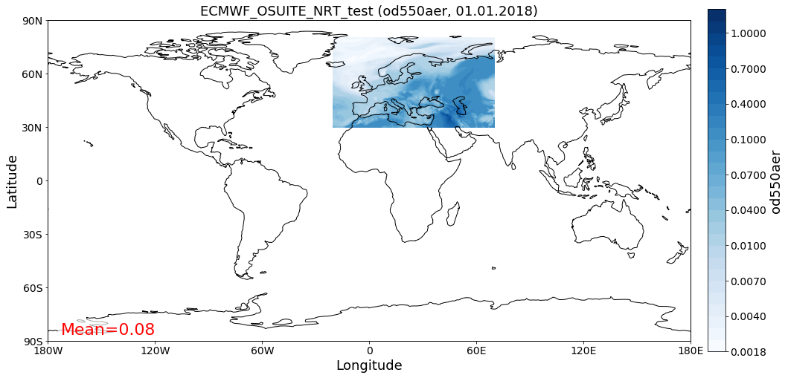

AEROCOM default regions (class Region)¶
This notebook introduces how pya handles information related to default regions (e.g. Europe, Asia, …) as used in the AEROCOM interface. All default regions are defined in the file regions.ini.
[1]:
import pyaerocom as pya
Initating pyaerocom configuration
Checking database access...
Checking access to: /lustre/storeA
Access to lustre database: True
Init data paths for lustre
Expired time: 0.016 s
What regions are available¶
[2]:
pya.region.all()
[2]:
['WORLD',
'EUROPE',
'ASIA',
'AUSTRALIA',
'CHINA',
'INDIA',
'NAFRICA',
'SAFRICA',
'SAMERICA',
'NAMERICA']
These region IDs can be used to access more information about the regions (which is used throughout pyaerocom). For instance:
Create a Region¶
[3]:
europe = pya.Region("EUROPE")
print(europe)
pyaeorocom Region
Name: EUROPE
Longitude range: [-20, 70]
Latitude range: [30, 80]
Longitude range (plots): [-20, 70]
Latitude range (plots): [30, 80]
[4]:
asia = pya.Region("ASIA")
print(asia)
pyaeorocom Region
Name: ASIA
Longitude range: [40, 150]
Latitude range: [0, 60]
Longitude range (plots): [40, 150]
Latitude range (plots): [0, 60]
Load example data and apply region specific crop¶
In the following cell, we create an instance of the GriddedData class (hich is introduced in more detail in a later tutorial), load some test data (from the CAMS ECMWF OSUITE dataset), crop it and plot a map of the results over Europe.
[5]:
data = pya.GriddedData()
data._init_testdata_default()
crop = data.crop(region="EUROPE")
fig = crop.quickplot_map()
Overwriting unit unknown in cube od550aer with value "1"

Computing distance to centre of region¶
For a given lat / lon coordinate, distances to the region centre coordinate can be computed as:
[6]:
dc = asia.distance_to_center(lat=45, lon=60)
dc #km
[6]:
3476.358401761219
Access centre coordinate:
[7]:
asia.center_coordinate # (lat, lon)
[7]:
(30.0, 95.0)
[8]:
asia.distance_to_center(30, 95)
[8]:
0.0
That’s it. Not much more to say about regions until now.